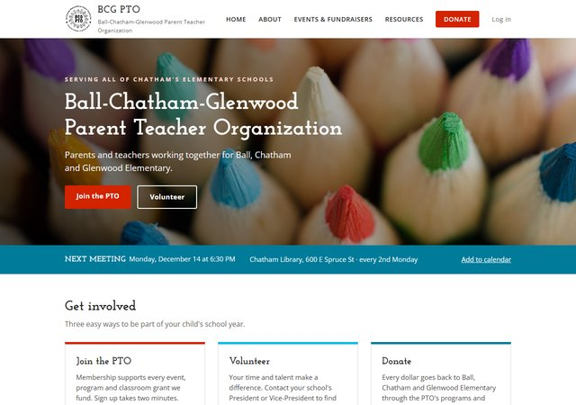
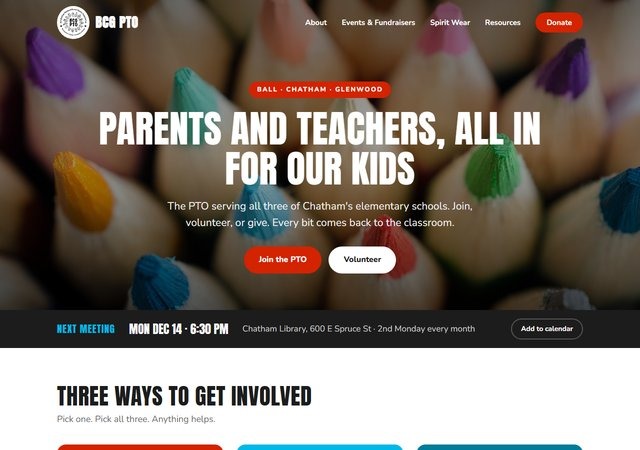
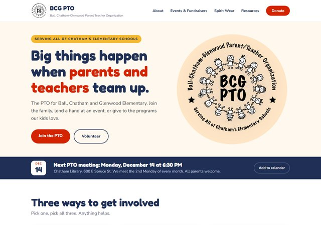

Three possible looks for the bcgpto.org homepage. Each one is a working page: open it, scroll it, and open it on your phone too, since it changes shape to fit. Buttons on the mock-ups do not go anywhere yet. Nothing on the real site has changed.

Same red and blue, same headings the site uses today, same order of sections. Flat background instead of dotted paper, two fonts instead of five, a photo at the top with Join and Volunteer buttons, meeting details in a bar.

Full-width photo and big headline in the same typeface as the sponsor block, rounded buttons, three solid-color cards for Join, Volunteer and Give, tiles for family resources. Still the current red, blue and teal.

Navy, red and gold on cream with a rounded typeface and the kids' logo as the main artwork. A softer, friendlier feel, and a concrete alternative if the color scheme itself is up for discussion.
All three put one clear action at the top, state the meeting as "2nd Monday" plus the next date, move Chatham Strong into a small band with a sentence of context, and keep the sponsor block as it is today. "Phone preview" shows the phone layout on a laptop screen; on an actual phone just open the mock-up.